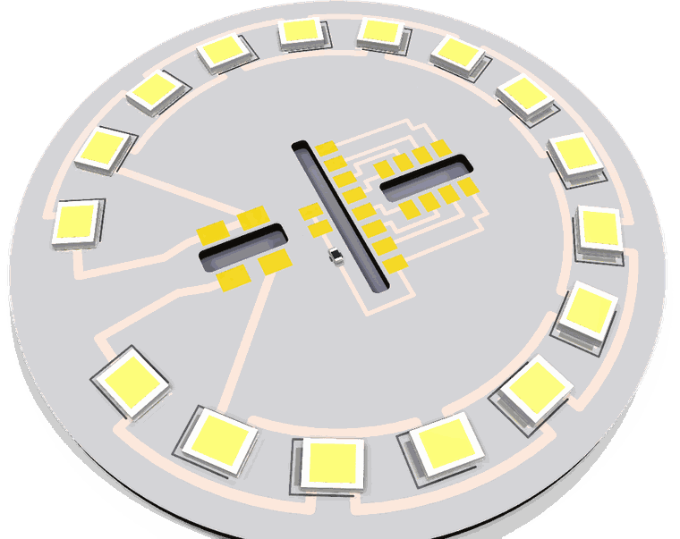

Blog ·
Lark, a voice-controlled ceiling-fan bulb on four boards
- examples
- lark
- led drivers
- flicker
- mains safety
Lark is a ceiling-fan light bulb designed for voice control, with the speech recognition inside the bulb. It screws into the fan's E26 socket and runs on 120 V mains. We asked for it after our Matter smart-home devices did not work well. An AI agent designed its four circuit boards with Via, our tools and checks for KiCad board design.

We wrote the brief and read the agent's work, its check results and its mistakes. No Lark has been built, and its voice and radio firmware is not written.
Why an LED needs a set current
Above a certain voltage, a small rise in an LED's voltage makes a large rise in its current. Lark's LEDs drop 8.8 V to 9.6 V at 100 mA, by bin, and less as they warm. A fixed voltage would set a different current in each LED. So an LED driver controls the current.
The driver board rectifies the mains into a bus near 165 V. Each of its two LED strings, warm and cool white, needs about 73 V. A buck converter steps the voltage down with a switch, a diode and a choke, which is a coil. With the switch on, current through the LEDs and the choke climbs. With it off, the choke drives the current on through the diode, and it falls. The output is the input times the duty cycle, the share of time the switch is on. Erickson and Maksimović derive this in Fundamentals of Power Electronics (2nd edition, Kluwer, 2001).
Each string has a Microchip HV9961 controller. It senses the current in a 2.74 ohm resistor, then holds the switch off for 2.5 µs. Its datasheet says it regulates the average current, where the older HV9910B stops at the peak. The current is 0.185 times the LD pin's voltage over the sense resistor: 100 mA at 1.48 V. A third buck makes 3.3 V from the same bus. Its Power Integrations LinkSwitch-TN2 chip holds a 725 V switch and its controller.
Steady light under turning blades
If a light pulses, the eye sees a passing fan blade only at a few places. The blades seem to stand still or step: the stroboscopic effect. Brad Lehman and Arnold Wilkins describe it in IEEE Power Electronics Magazine (2014). Their paper is "Designing to Mitigate Effects of Flicker in LED Lighting". IEEE Std 1789-2015 measures flicker as percent modulation: the highest light less the lowest, over their sum. Its low-risk level at 120 Hz is 9.6 percent.
Rectified 60 Hz mains peaks 120 times a second, and the bus sags between peaks. A buck only lowers a voltage, and the HV9961 regulates up to a duty cycle of 0.75. So the bus must stay above the highest string voltage, 77.5 V, over 0.75: 103.3 V. Below that, the LED current would dip 120 times a second. The simulation shows 9.9 µF of bulk capacitance holding the valley at 117.0 V at the worst corner.
A common way to dim LEDs is PWM, pulse-width modulation: switching them fully on and off, fast. Under a fan, those pulses strobe too. Lark dims by lowering the steady current. A resistor-capacitor filter turns the brain board's 20 kHz PWM into a steady voltage on the LD pin.
A bulb with no isolation
Lark has no isolation, the break a transformer makes between the mains and what you touch. Every node, the 3.3 V logic too, sits at mains potential. The plastic housing is the insulation from a hand.
Inside, the logic can differ from the mains nets by up to 198 V. IPC-2221B, the Generic Standard on Printed Board Design, gives copper gaps by voltage in Table 6-1. For 151 to 250 V, it sets 0.8 mm on an outer layer beside a part's lead. Inside the board, in solid glass-epoxy, it sets 0.2 mm. The agent wrote both into the rule file, and the design rule check (DRC) holds every gap to them.
We asked for a DIP switch on the side to choose Alexa or Apple Home. Its contacts would sit at mains potential under a finger. The agent chose a magnet in a slider outside the sealed housing, over two Hall switches inside. In the Hall effect, a magnetic field pushes moving charges to one side of a thin plate. A small voltage then appears across it.
Where the microphones go
Lark hangs base-up, so the dome's tip faces the room. Warm air rises, so the tip is also the coolest place. The agent put the two microphones there, on a 15 mm disc called the ear. Air in a shell with a small opening rings like a bottle, a Helmholtz resonator. The air in the opening is the mass, and the air in the shell is the spring. The ear's design file puts the dome's resonance near 400 Hz, which would weaken the higher tones of speech. So each port opens through the ear to its own hole in the dome.
The microphones sit 10.4 mm apart and feed an ESP32-S3 meant to run Espressif's ESP-SR speech models. A two-microphone beamformer favors one direction from the delay between them. Sound crosses 10.4 mm in about 30 µs, under half of one 62.5 µs sample at ESP-SR's 16 kHz. ESP-SR's two-microphone front end is tuned for 4 to 6.5 cm, so its beamforming gains little here.
How the design went
The agent tried an A15 bulb first, 47.6 mm across. Each of the driver's 56 parts fit alone, but not together. We answered: "expand the design as well if it cannot fit, or use multiple dimensions of stacked boards". The housing grew to an A19, 60 mm across and 108 mm long. Its inside is a cone, a sphere and a 20 mm tube. So Lark is four boards in two directions. The driver stands in the neck, and the aluminum light disc lies across its top. The brain board stands in the dome at 90 degrees to the driver, up to the ear. Tongues on the standing boards pass through slots in the lying boards, and solder fillets join them.
The driver took the most routing work. On two layers, the FreeRouting autorouter left 26 connections open. On four layers, the router's file left out the new ground plane, and 37 stayed open. Our list of mistakes records that and the next fix's spacing errors as M207 and M208. The agent coded the links the router left open: 94 track segments and 23 vias. FreeRouting routed the rest.
The simulation check also failed once. The bus deck's 9.1 W load, meant as both strings at full current, was one string's worth. At the corners, one bulk capacitor carried more alternating current than its 47 mA rating. The agent added a firmware rule: warm and cool together draw at most 90 percent of one string. Now the deck's load is 8.3 W, and the worst corner carries 44.7 mA (M210).
All four boards pass Via's checks, with 12 warnings between them.
What is open
No firmware has run on a board. The logic stays on with the light off and would draw about 0.9 W from the mains. California's Title 20 holds a state-regulated LED lamp's standby to 0.2 W. Version 0.1 does not handle a fan's triac dimmer, which cuts away part of each mains half-cycle. A lamp sold in the US is listed to UL 1993, and its driver to UL 8750. Neither listing is started. The Lark README lists every open item, and the Lark page shows the assembly.
Next, we want to try a wake-word chip that draws a few milliwatts and wakes the voice chip. We also want to settle the microphones' spacing, then build a bulb and measure it.